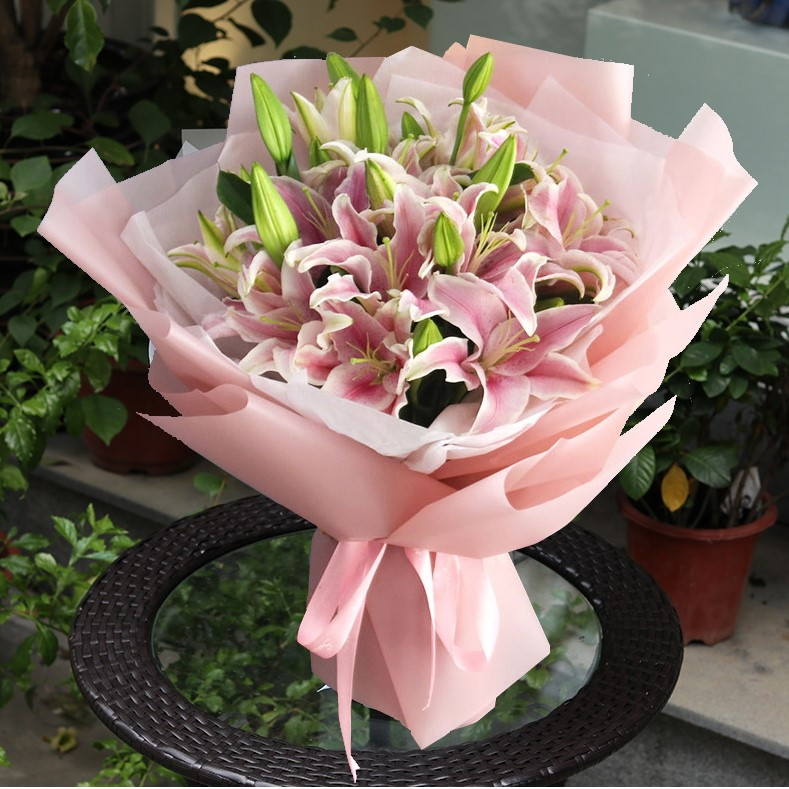

2nd Week
Hello, my name is Hariesya,
this is me developing my own website
" Hi, I'm student Information Management in Kedah
My goal is to complete my studies successfully and build a successful career in the future. I hope that my exprience at UiTM Merbok will help me gain a confident and knowledged."
I have my own motivation
- “Keep going, even when it feels like nothing is changing.”
- “Your future self will thank you for not giving up.”
- "Small progress is still progress.”
